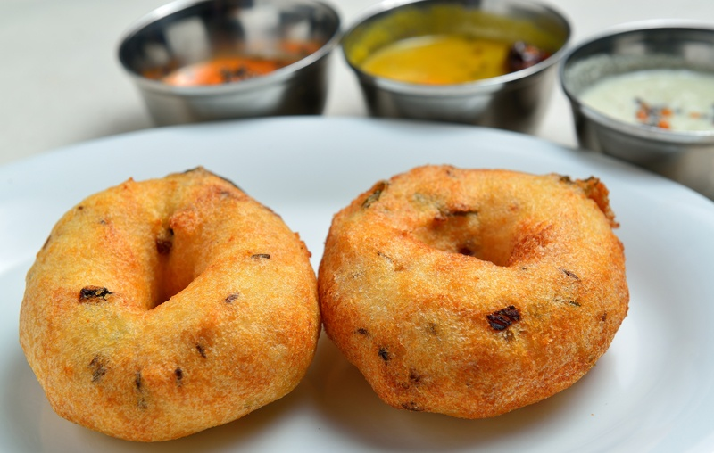

Vadai

What is Vadai?
Vada is a category of savoury fried snacks native to South India. Vadas can be described variously as
fritters, cutlets, doughnuts, or dumplings. Alternative names for this food include vadai, vade, and bada.
Vadas are sometimes stuffed with vegetables and traditionally served with chutneys and sambar.
Native to South India, Vadas are normally meant to be for breakfast and south indians prefer to have it with Idly
What are the ingredients required to make it?
- 1 cup Urad Dal (Split White Lentils)
- 1 medium Onion or 2-3 shallots, finely chopped (optional)
- 1 teaspoon Cumin Seeds
- 1/2 teaspoon crushed Black Peppercorns
- 5-7 Curry Leaves, finely chopped, optional
- 1-2 Green Chillies, finely chopped
- A pinch of Asafoetida (hing), optional
- 2-3 tablespoons finely chopped Coriander Leaves
- Oil, for deep frying
- Salt to taste
How is it made?
- Take 1 cup urad dal in a small deep pot.
- Wash it 2-3 times in water and then soak it in approx. 1½ cups water for 2-3 hours.
- Drain excess water from the dal and transfer it to the jar of a blender/mixer grinder.
- Grind until the batter is fluffy and have smooth texture. Batter should be thick in consistency.
- Transfer batter into a bowl and beat it using your hand for 1-2 minutes in one direction.
- Add 1 finely chopped onion (optional), 1 teaspoon cumin seeds, 1/2 teaspoon crushed black peppercorns, 5-7
chopped curry leaves, 1-2 chopped green chillies, a pinch of asafetida (hing), 2-3 tablespoons chopped
coriander leaves and salt.
- Mix well.
- Heat oil in a deep kadai or frying pan over medium flame.
- Wet your palm with water. Take medium lemon sized portion of batter on your palm, press it gently and make
thick round shaped vada.
- Make a whole in the center using your thumb.
- When the oil is medium hot, slowly slide vada in it; add 3-4 vadas at a time. Flip and deep-fry both the
sides until they turn light golden brown and crisp.
- Drain excess oil and transfer them over kitchen paper on a plate. Repeat the same process for remaining
batter.
Spongy medu vada is ready to serve with hot idly, sambhar and chutnies